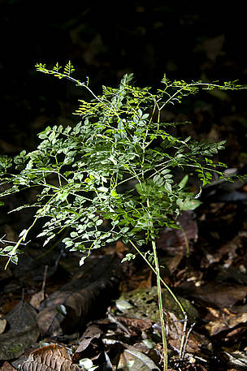

Por que a Amazônia é importante?
O que liga a floresta Amazônica, o aquecimento mundial e você?
Há muito tempo a floresta Amazônica é reconhecida como um
repositório de serviços ecológicos, não só para os povos
indígenas e as comunidades locais, mas também para o restante do
mundo. Além disso, de todas as florestas tropicais do mundo, a
Amazônia é a única que ainda está conservada, em termos de
tamanho e diversidade.
No entanto, à medida que as florestas são queimadas ou retiradas e o processo de aquecimento global é intensificado, o desmatamento da Amazônia gradualmente desmonta os frágeis processos ecológicos que levaram anos para serem construídos e refinados.
Ironicamente, enquanto as florestas tropicais úmidas diminuem continuamente, o trabalho científico realizado nas últimas duas décadas jogou um pouco de luz sobre os vínculos essenciais que existem entre a saúde das florestas tropicais e o resto do mundo.
Filtragem e reprocessamento da produção mundial de gás carbônico
As árvores desempenham um papel-chave na redução dos níveis de poluição. Para entendermos melhor como isso funciona, vamos tomar como exemplo o gás carbônico (CO2), cujas emissões provêm tanto de fontes naturais como da atividade humana. Nos últimos 150 anos, os seres humanos têm lançado quantidades enormes de CO2 no ar por meio da queima de combustíveis fósseis, carvão, petróleo e gás natural – e esta é uma das principais causas das mudanças climáticas no planeta.
Entra o gás carbônico, sai o oxigênio
Em condições naturais, as plantas retiram o CO2 da atmosfera e o absorvem para fazer a fotossíntese, um processo de produção de energia. Com a fotossíntese, as plantas obtêm:
-
Oxigênio, que é liberado novamente no ar, e
-
Carbono, que é armazenado para permitir o crescimento das
plantas.
Assim, sem as florestas tropicais úmidas e todas as suas plantas fazendo fotossíntese durante o todo o dia, o efeito estufa provavelmente seria mais pronunciado, e as mudanças climáticas podem vir a ser ainda mais graves.
Floresta Amazônica e o gás carbônico
O que as florestas retiram do ar elas podem devolver. Quando as florestas são queimadas, a matéria de carbono da árvore é liberada no ar, na forma de CO2, um gás que polui o ar e que já está presente numa quantidade excessiva na atmosfera.
Onde antes havia floresta tropical úmida e savanas, agora surgem pastagens para a criação de gado. Os pastos estão cheios de gado e também de cupins, e as atividades metabólicas desses dois animais também liberam CO2, embora sua contribuição para a poluição atmosférica ainda gere muita polêmica.
As culturas agrícolas que substituem as florestas absorvem apenas uma pequena fração do CO2 consumido pela floresta tropical úmida. Então, sem florestas, o CO2 deixa de ser transformado pela fotossíntese. Juntamente com a poluição industrial, o desmatamento descontrolado na América do Sul e em outros lugares aumentou significativamente a quantidade de CO2 na atmosfera.
A floresta amazônica pode curar você
Há uma ligação entre os remédios guardados nos armários de
sua casa e a vida silvestre da Amazônia: plantas e animais
servem como base para a fabricação de medicamentos.
Durante
milênios, os seres humanos utilizaram insetos, plantas e
outros organismos da região para várias finalidades, entre
elas a agricultura, vestimentas e, claro, a cura para
doenças.
Povos indígenas e outros grupos que vivem na floresta
amazônica aperfeiçoaram o uso de compostos químicos
encontrados em plantas e animais. O conhecimento sobre o uso
dessas plantas geralmente fica nas mãos de um curandeiro,
que por sua vez repassa a tradição para um aprendiz. Esse
processo se mantém ao longo de séculos e compõe uma parte
integral da identidade desses povos.
No entanto, com o
rápido desaparecimento das florestas úmidas tropicais, a
continuidade desse conhecimento para o benefício das futuras
gerações encontra-se ameaçada.
O potencial inexplorado das plantas amazônicas
Os cientistas acreditam que menos de 0,5% das espécies da flora foram detalhadamente estudadas quanto ao seu potencial medicinal. Ao mesmo tempo em que o bioma Amazônia está encolhendo lentamente em tamanho, a riqueza da vida silvestre de suas florestas também se reduz, bem como uso potencial das plantas e animais que ainda não foram descobertos.
Menos de 0,5% das espécies amazônicas foram detalhadamente estudadas quanto ao seu potencial medicinal